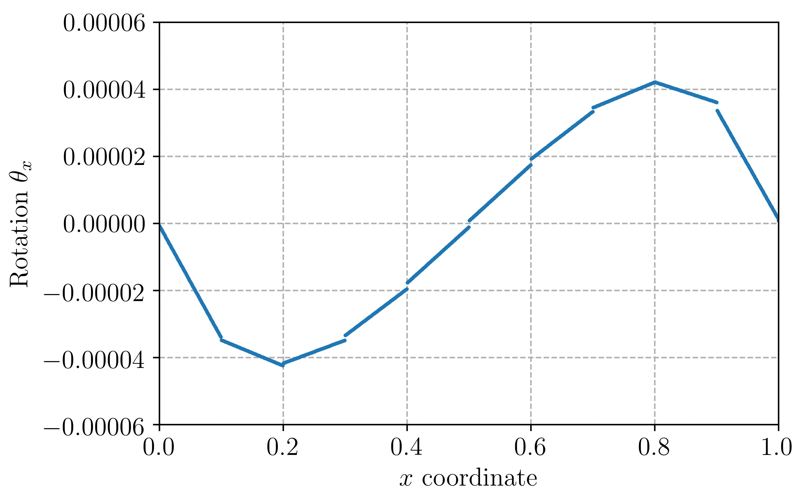

Reissner-Mindlin plate with a Discontinuous-Galerkin approach¶
Introduction¶
This program solves the Reissner-Mindlin plate equations on the unit
square with uniform transverse loading and clamped boundary conditions.
The corresponding file can be obtained from reissner_mindlin_dg.py.
It uses a Discontinuous Galerkin interpolation for the rotation field to remove shear-locking issues in the thin plate limit. Details of the formulation can be found in [HAN2011].
The solution for \(\theta_x\) on the middle line of equation \(y=0.5\) will look as follows for 10 elements and a stabilization parameter \(s=1\):
{kind=link}
Implementation¶
Material properties and loading are the same as in Reissner-Mindlin plate with Quadrilaterals:
from __future__ import print_function
from fenics import *
E = Constant(1e3)
nu = Constant(0.3)
thick = Constant(1e-2)
D = E*thick**3/(1-nu**2)/12.
F = E/2/(1+nu)*thick*5./6.
f = Constant(-thick**3)
The unit square mesh is here divided in triangles and we get the facet MeshFunction for the integration measure \(\text{d}s\):
N = 40
mesh = UnitSquareMesh(N, N)
facets = MeshFunction("size_t", mesh, 1)
facets.set_all(0)
ds = Measure("ds", subdomain_data=facets)
Continuous interpolation using of degree 2 is chosen for the deflection \(w\) whereas the rotation field \(\underline{\theta}\) is discretized using discontinuous linear polynomials:
We = FiniteElement("Lagrange", mesh.ufl_cell(), 2)
Te = VectorElement("DG", mesh.ufl_cell(), 1)
V = FunctionSpace(mesh, MixedElement([We, Te]))
Clamped boundary conditions on the lateral boundary are defined as:
def border(x, on_boundary):
return on_boundary
bc = [DirichletBC(V.sub(0), Constant(0.), border)]
Standard part of the variational form is the same (without full integration):
def strain2voigt(eps):
return as_vector([eps[0, 0], eps[1, 1], 2*eps[0, 1]])
def voigt2stress(S):
return as_tensor([[S[0], S[2]], [S[2], S[1]]])
def curv(u):
(w, theta) = split(u)
return sym(grad(theta))
def shear_strain(u):
(w, theta) = split(u)
return theta-grad(w)
def bending_moment(u):
DD = as_tensor([[D, nu*D, 0], [nu*D, D, 0],[0, 0, D*(1-nu)/2.]])
return voigt2stress(dot(DD,strain2voigt(curv(u))))
def shear_force(u):
return F*shear_strain(u)
u = Function(V)
u_ = TestFunction(V)
du = TrialFunction(V)
L = f*u_[0]*dx
a = inner(bending_moment(u_), curv(du))*dx + dot(shear_force(u_), shear_strain(du))*dx
We then add the contribution of jumps in rotation across all internal facets plus a stabilization term involing a user-defined parameter \(s\):
n = FacetNormal(mesh)
h = CellVolume(mesh)
h_avg = (h('+')+h('-'))/2
stabilization = Constant(10.)
(dw, dtheta) = split(du)
(w_, theta_) = split(u_)
a -= dot(avg(dot(bending_moment(u_), n)), jump(dtheta))*dS + dot(avg(dot(bending_moment(du), n)), jump(theta_))*dS \
- stabilization*D/h_avg*dot(jump(theta_), jump(dtheta))*dS
Because of the clamped boundary conditions, we also need to add the corresponding contributions of the external facets (the imposed rotation is zero on the boundary so that no term arise in the linear functional):
a -= dot(dot(bending_moment(u_), n), dtheta)*ds + dot(dot(bending_moment(du), n), theta_)*ds \
- 2*stabilization*D/h*dot(theta_, dtheta)*ds
We then solve for the solution and export the relevant fields to XDMF files
solve(a == L, u, bc)
(w, theta) = split(u)
Vw = FunctionSpace(mesh, We)
Vt = FunctionSpace(mesh, Te)
ww = Function(Vw, name="Deflection")
tt = Function(Vt, name="Rotation")
ww.assign(project(w, Vw))
tt.assign(project(theta, Vt))
file_results = XDMFFile("RM_DG_results.xdmf")
file_results.parameters["flush_output"] = True
file_results.parameters["functions_share_mesh"] = True
file_results.write(ww, 0.)
file_results.write(tt, 0.)
The solution is compared to the Kirchhoff analytical solution:
print("Kirchhoff deflection:", -1.265319087e-3*float(f/D))
print("Reissner-Mindlin FE deflection:", -ww(0.5, 0.5))
For \(h=0.001\) and 50 elements per side, one finds \(w_{FE} = 1.38322\text{e-5}\) against \(w_{\text{Kirchhoff}} = 1.38173\text{e-5}\) for the thin plate solution.
References¶
| [HAN2011] | Peter Hansbo, David Heintz, Mats G. Larson, A finite element method with discontinuous rotations for the Mindlin-Reissner plate model, Computer Methods in Applied Mechanics and Engineering, 200, 5-8, 2011, pp. 638-648, https://doi.org/10.1016/j.cma.2010.09.009. |